![Machine generated alternative text:
Solution Explorer
004
Search Solution Explorer (Ctrl+;)
Solution 'Lotto' (I of I project)
Add New Item...
Existing Item...
New Folder
Add ASP.NET Folder
From Cookiecutter...
REST API Client...
Client-Side Library...
New Azure WebJob Project
Existing Project as Azure WebJob
Reference...
Service Reference...
Connected Service
Web Form
Web User Control
JavaScript File
Style Sheet
HTML Page
Ctrl+Shift+
Shift+AIt+
Build Web Site
Publish Web App
Scope to This
New Solution Explorer View
View Class Diagram
Client-Side Library...
Manage NuGet Packages...
Manage Client-Side Libraries...
Start Options...
Set as StartUp Project
View in Browser (Google Chrome)
Browse With...
Refresh Folder
Source Control
Cut
Copy
Remove
Open Folder in File Explorer
Save As Solution Filter
Hide Unloaded Projects
Load Project Dependencies
Properties Window
Property Pages
Run Code Analysis on Web Site
Ctrl*
Ctrl+Shift+
Ctrl+X
Ctrl* C
Ctrl+V
Shift
w
ml-JS
ml- Pascal
ml-Py
• ml-VB
Plano I
.gitattributes
.gitignore
_ config.yml
index .html
Lotto.sln
lottoOI .html
ml-JS.htmI
ml- Pascal.html
ml-Py.html
ml-V8.htmI
planOI .html
plan02.htmI
plan03.htmI
planu.html
README.md
Web.config
zzindex.html
on Explorer
Ries
Team Explorer](images/htmlPasteTrick/clip_image003.jpg)
Handy HTML paste trick for anyone wanting to upload Word or OneNote documents
Home (for Blackwatte students working on their projects)
For detailed OneNote or Word docs which have:
· bullets
o at multiple levels
1. And numbering
a. With 2 or more levels
b. Colours such as Green
c. And fonts such as Courier which may be used for code blocks
Note: The OneNote links below will only work for Blackwattle students who have the relevant Microsoft permission.
Note that the resulting web pages are messy under the bonnet, but reasonably easy to edit and manipulate in an editor.
(the css script is attached to each line)
You'll need Visual Studion as Dreamweaver does not preserve indents and much of the format, probably because it's not a Microsoft product.
I'm going to copy this Pascal Setup Notes short page as an example.
On OneNote, select all on the page (CTRL+A+A) and paste into a blank Word document.
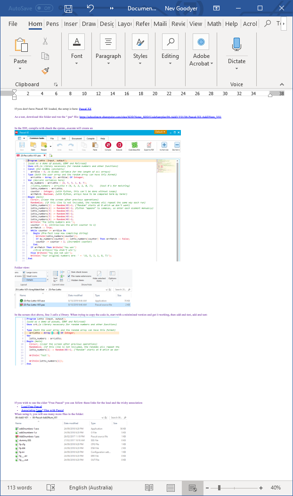
In visual studio, right click on the solution FOLDER to create a new HTML page:
Create a folder with the same name as the page name:
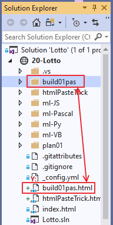
Name it and view it in split view (Split HTML Page in Visual Studio):
![Machine generated alternative text:
File Edit
Extensions
plan03.htmI
G Design
Yiew project
Window Help
Build
Debug
Debug
Test Analyze
Any CPU
Tools
Search...
Lotto
buildOI pas.html*
< !DOCTYPE html>
<meta
/ title>
< / body>
< / html>
x
planæ.html
plan02.htmI*
Live Share
Solution Explorer
Search Solution Explorer (Cl
Solution 'Lotto' (I of I prc A
, e 20-Lotto
buildOI pas
htmlPasteTrick
ml-JS
ml- Pascal
ml-Py
• ml-VB
Plano I
.gitattributes
.gitignore
_ config.yml
buildOI pas.html
htmlPasteTrick.htn•
index .html
Lotto.sln
Inttnnl html
Solution Explor...
Team Explorer
Properties
buildOIpas.htmI Web File •
File Name
buildOI pas.htr
@ Split
col 1
Source
20-JS-Lotto
master](images/htmlPasteTrick/clip_image006.jpg)
In Word, select all (CTRL+A) and paste it into the "Design" side of the page above:
![Machine generated alternative text:
File
Tools
Edit Yiew project
Extensions Window
Build
Help
Debug
Debug
Format Table
Any CPU
Test
Ana
(New Inline Stylf •
Lotto
plan03.htmI
346
347
351
352
353
354
355
356
357
358
359
361
G Design
buildOI pas.html*
24/eg/2e18 g:2e pm
planæ.html
x
plan02.htmI*
Type
Application
O File
Pascal source
SSS File
CFE File
DSK File
Configuration
ERR File
file
sett...
OLIT File " height
font -family : uot; Time s m New
: EN- ALI" >
< / body>
< / html>
99 *
If you don't have Pascal loaded the
setup is here: Pascal
As a test: download this folder and run
the " _pas" file:
https-
Add3Nunn VOI
In the IDE: compüe with check the
syntax: execute ihi_ll create an
PX Pascal XE
Common tasks
20 -Pas-Lotto-VOI pas X
program Lotto (
input
outpu
{used as a demo of pseudo,
; {a Library necessa
Uses crt
Const {for GLOBAL constants
art-Size
6; {a GLobaL va
Tvoe {both the user arrav
Live Share
Solution Explorer
CO
Search Solution Explorer (Cl
Solution 'Lotto' (I of I prc A
, e 20-Lotto
buildOI pas
htmlPasteTrick
ml-JS
ml- Pascal
ml-Py
• ml-VB
Plano I
.gitattributes
.gitignore
_ config.yml
buildOI pas.html
htmlPasteTrick.htn•
index .html
Lotto.sln
Inttnnl html
Solution Explor...
Team Explorer
Properties
DOCUMENT
@ Split
col 1
Source
20-JS-Lotto
master](images/htmlPasteTrick/clip_image008.jpg)
Click on an image and look in the code window to see where it has been stored - probably in the depths of the c-drive! Copy the address and view the images in File Explorer. Select them all (CTRL+A) and CUT (CTRL+X).
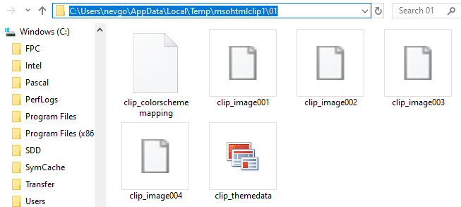
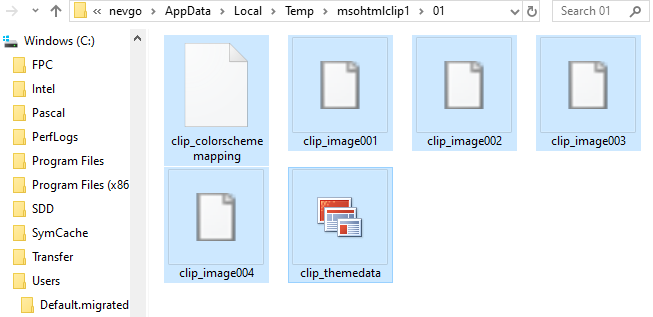
Go to the website file view and paste into the folder you created:

Now of course, all the links are broken on the web page. We can solve this with a "Find and Replace" (CTRL+H):
In this case "images/htmlPasteTrick" needs to be replaced with "build01pas":
If you are using an images folder, replace with "images/build01pas"
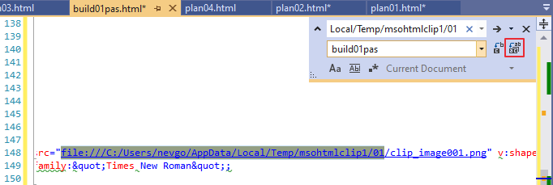
In this case, there are 8 replacements:
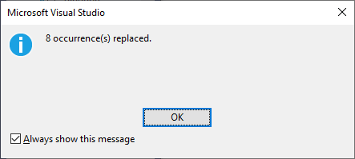
Open your file and check the format - although the code is a dog's breakfast, indents and colours should be preserved:
Now, Dreamweaver is also very handy. In my case, I have 7 image folders, which I would like to put inside 1 "images" folder. In Dreamweaver, if you move a folder or page, you are given the option to automatically update all the links. You must have the site setup and this is the view. Drag the build folder into the image folder:
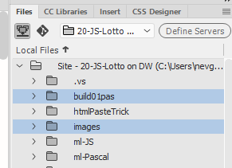
As you release from the drag, you see this dialog. Choose "Update":
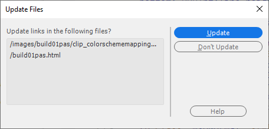
After moving 7 folders, the directory is tidier and still functional:
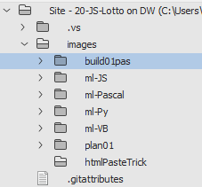
The tidy version is:
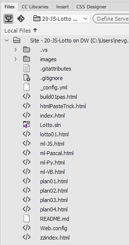
And back in VS, after a "refresh", the folders looks like:
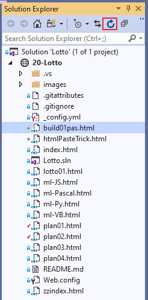
Remember to give your page a "Title"! Add it in on line 5 of the code, between the Title tags.
Hope it works for you!
Hope it works for you?